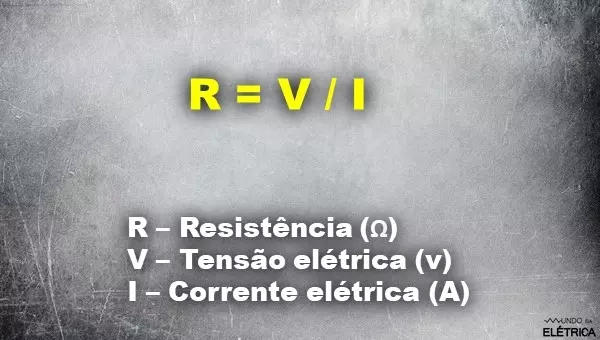

George Simon Ohm foi um físico e matemático, estudante da universidade de Erlangen, na Bavária. Foi George que realizou as experiências para chegar ao conceito que temos hoje sobre a resistência e a resistividade elétrica!
George Simon desenvolveu as chamadas Leis de Ohm, que relacionam matematicamente as principais grandezas elétricas: a tensão, a corrente, a resistência e a resistividade. Essas leis são chamadas de primórdios da eletricidade, pois fazem parte dos estudos básicos da energia elétrica.
A primeira Lei de Ohm determina que, para um condutor energizado mantido à uma temperatura constante, a razão da tensão entre os dois pontos e a corrente elétrica é constante. Esta constante é determinada como resistência elétrica. Dando origem à fórmula da resistência elétrica.
Figura 01: Fórmula da resistência elétrica

Fonte: Mundo da elétrica
A resistência elétrica é definida como a oposição que um material tem à passagem da corrente elétrica. Ela tem relação com o tipo de material que o condutor é constituído e as suas características dimensionais.
Segunda Lei de Ohm
Já a segunda Lei de Ohm relaciona as grandezas que influenciam na resistividade de um condutor elétrico. Essas grandezas são: resistividade do material, largura do condutor e a área da secção transversal do condutor.
A Segunda Lei de Ohm cita em seu enunciado que a resistência elétrica de um condutor homogêneo de secção transversal constante, é diretamente proporcional ao seu comprimento e inversamente proporcional à sua área de secção transversal, além de depender do material que foi feito.
Matematicamente falando, temos que a resistência de um condutor é:
Figura 02: Fórmula da resistência de um condutor
Fonte: Mundo da elétrica
Ou seja, a resistência elétrica de um condutor será maior quando o seu comprimento for maior e sua secção transversal for menor. Em contra partida, temos que a resistência elétrica de um condutor será menor quando seu comprimento for menor e sua secção transversal for maior.
Popularmente, chamamos os condutores de fios ou cabos. Eles são usados para transportar a corrente elétrica dentro de um circuito. Saber a resistividade do condutor influencia os cálculos de quedas da tensão e no dimensionamento das cargas.
Os condutores são feitos de materiais que facilitam a passagem da corrente, entretanto, todo material possui em si uma certa oposição ao fluxo dos elétrons. Essa oposição que o próprio material tem é chamada de resistividade.
Resistividade
Na segunda Lei de Ohm vimos que a resistividade é uma constante que depende de cada material, ou seja, a resistividade faz parte da característica atômica de cada material, sendo este valor imutável.
A resistividade é uma grandeza física medida em Ohm por metro (Ω.m), e representada pela letra grega ρ. Todos os materiais possuem a resistividade variando de acordo com as suas características construtivas. Veja a resistividade de alguns materiais na tabela abaixo.
| Material |
Resistividade |
Emprego |
| Prata |
1,64 x 10^-8 |
Condutor |
| Cobre |
1,72 x 10^-8 |
Condutor |
| Alumínio |
2,8 x 10^-8 |
Condutor |
| Ouro |
2,45 x 10^-8 |
Condutor |
| Carbono |
4 x 10^-5 |
Semicondutor |
| Germânio |
47 x 10^-2 |
Semicondutor |
| Silício |
6,4 x 10^2 |
Semicondutor |
| Papel |
10^10 |
Isolante |
| Mica |
5 x 10^11 |
Isolante |
| Vidro |
10^12 |
Isolante |
| Teflon |
3 x 10^12 |
Isolante |
Embora a resistividade elétrica seja uma característica imutável de cada material, o valor da resistividade pode mudar quando o condutor é submetido a diferentes temperaturas.
Para saber mais sobre resistência elétrica, veja o vídeo a seguir do canal Mundo da Elétrica, nele explicamos o conceito da resistência elétrica e como esta grandeza se relaciona com as demais grandezas da eletricidade.
Aplicações da segunda lei de Ohm
Exemplo 01: Um fio possui resistividade igual a 1,5x10^-4 Ωxm, 6 m de comprimento e área transversal igual a 3⋅10^-3 m2. Qual é a resistência elétrica desse fio?
Extraindo os dados do problema:
- p = 1,5x10^-4
- L = 6 m
- A = 3x10^-3 m²
- R = ?
Exemplo 2: Um fio de comprimento L possui resistência igual a 60. Em determinado momento, foram cortados 2 metros desse fio, fazendo com que sua resistência fosse para 50, sendo assim, calcule o comprimento inicial desse fio.
Como o comprimento é diretamente proporcional à resistência elétrica, é possível resolver esse problema via regra de três.
Multiplicando cruzado, ou seja, fazendo o produto entre L - 2 e 60Ω, e igualando ao produto entre L e 50Ω:
Diferenças entre primeira lei de Ohm e segunda lei de Ohm
- Primeira lei de Ohm: relaciona a resistência elétrica de um circuito e a corrente elétrica que o percorre de maneira inversamente proporcional. Outra característica dessa lei é que a resistência elétrica é constante em determinado espaço de temperatura, porém, na medida em que o fluxo da corrente aumenta, o resistor aquece e tem a resistência elétrica aumentada.
- Segunda lei de Ohm: relaciona a resistência elétrica com o elemento que compõe o resistor, como sua área transversal e comprimento. Nessa lei a resistência elétrica pode ser variável, já que pode ser reduzida, diminuindo o comprimento do resistor elétrico.
A Importância da Segunda Lei de Ohm
A Segunda Lei de Ohm é uma ferramenta fundamental na análise e no projeto de circuitos elétricos. Ela permite que os engenheiros e eletricistas calculem corretamente a corrente elétrica em um circuito, com base na tensão e na resistência presentes.
Ao compreender e aplicar corretamente essa lei, podemos garantir a segurança e o bom funcionamento de dispositivos elétricos e circuitos mais complexos. Além disso, a Segunda Lei de Ohm é essencial para o estudo da eletricidade e para o avanço de tecnologias em diversas áreas, como eletrônica, telecomunicações e energia renovável.